架空ブランドのデザインサンプルです。商品・数値・ご感想はすべて架空で、画像は生成 AI で作成しています。
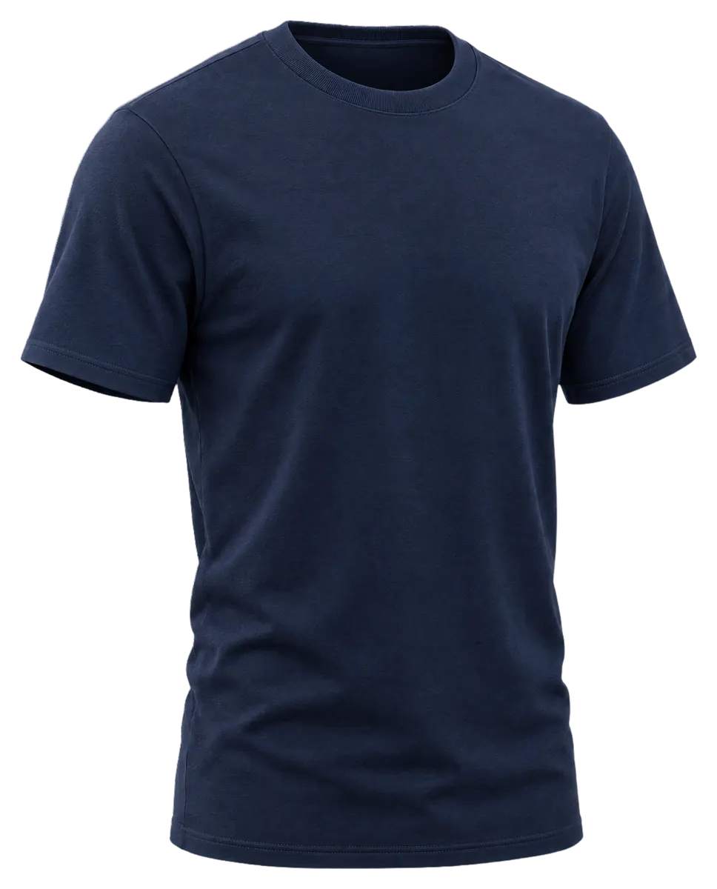
01Relax Wear
一日の終わりに、
着替えたくなる一枚。
SAMPLE RELAX は、くつろぎの時間のためにつくったリラックスシャツです。
02Empathy
がんばった一日の、そのあとに。
- 外の服のままでは、気持ちが切り替わらない夜。
- スマホを置いても、なんとなく落ち着かない夜。
- くつろぐ時間こそ、着るものを選びたいと考えました。
03Material
糸から考えた、やわらかな肌ざわり。
細い糸を細かく編み上げた生地を、ていねいに仕上げています。
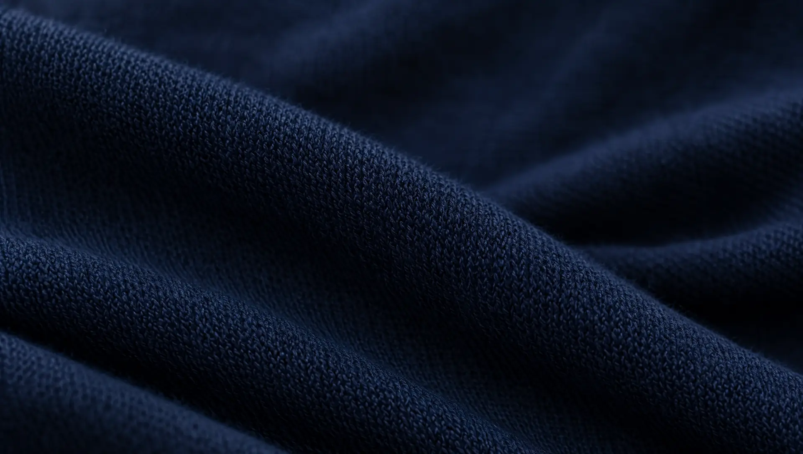
細番手の糸
細く長い繊維の糸を選び、なめらかな手ざわりに仕上げました。
目のつまった編み
細かく均一な編み目で、薄手でも透けにくい生地にしています。
なめらかな表面仕上げ
表面の毛羽を整え、さらりとした肌ざわりにしました。
04Features
一枚に込めた、四つのこだわり。
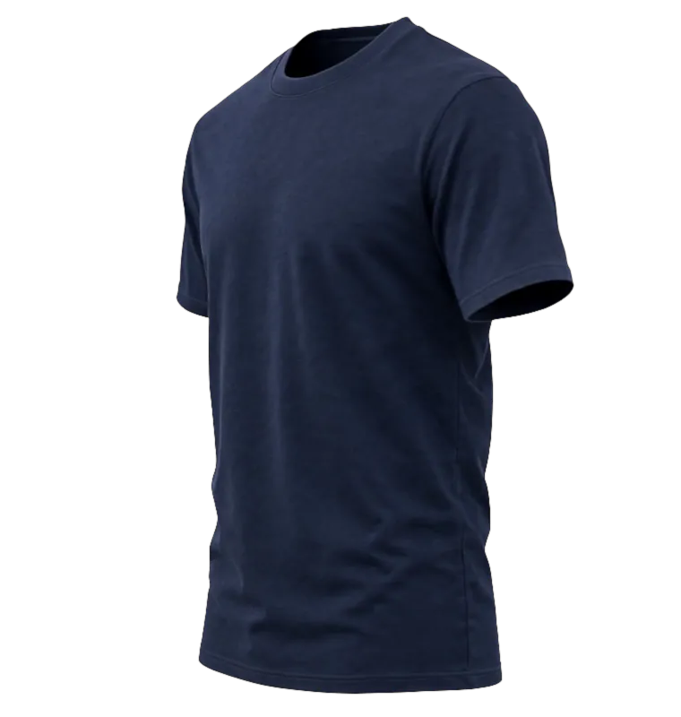
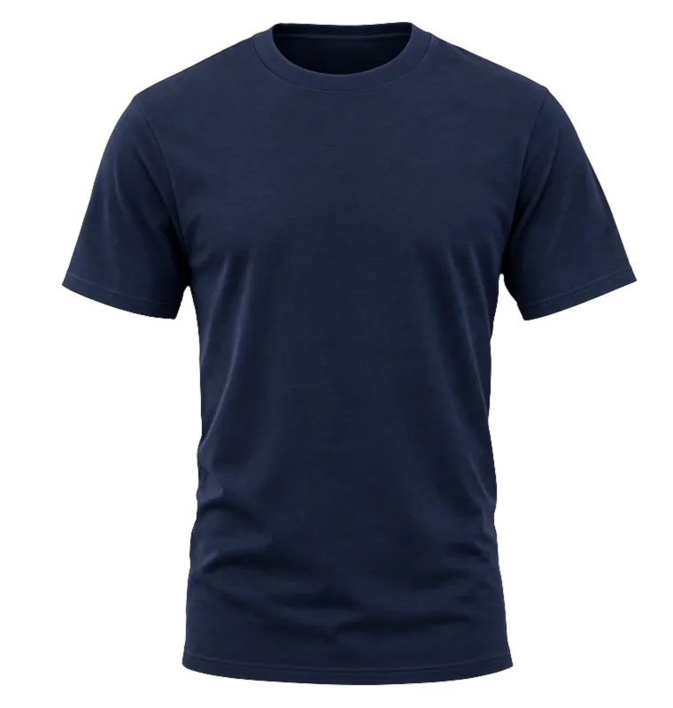
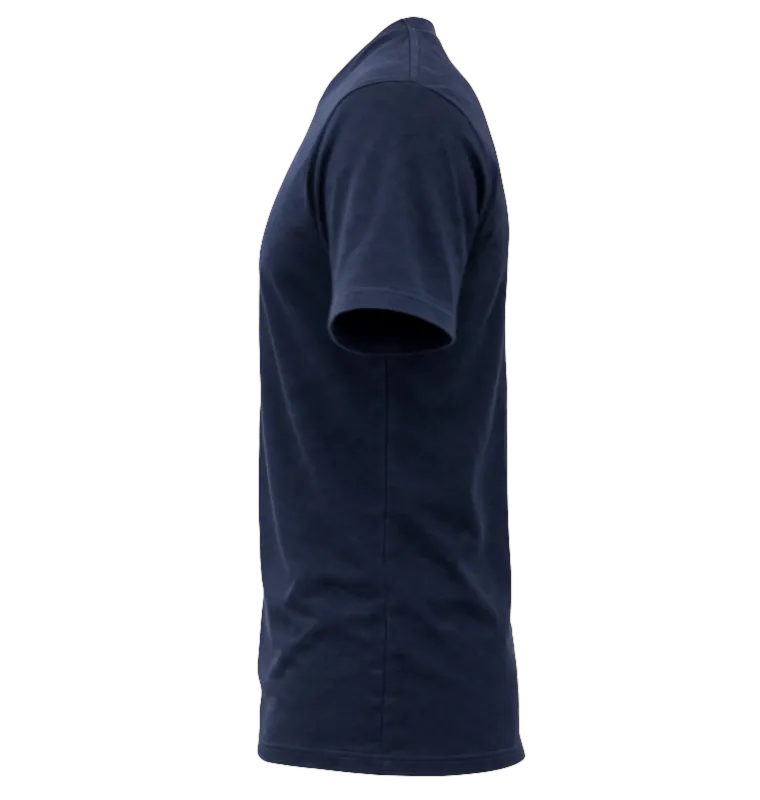
01
ひっかかりの少ない縫製
肌にあたる縫い代をできるだけ平らに仕上げ、着たときのひっかかりを少なくしました。
02
ほどよいゆとりのシルエット
肩まわりと身幅に少しだけゆとりを持たせ、締めつけ感の少ない形にしています。
03
軽く、からだに沿う生地
細い糸で編んだ軽い生地が、動きに合わせてやわらかく沿います。
04
洗濯機で洗えるお手入れのしやすさ
ご家庭の洗濯機で洗えます。毎日の部屋着として、気軽にお使いください。
05One Day
帰宅してから、朝まで。
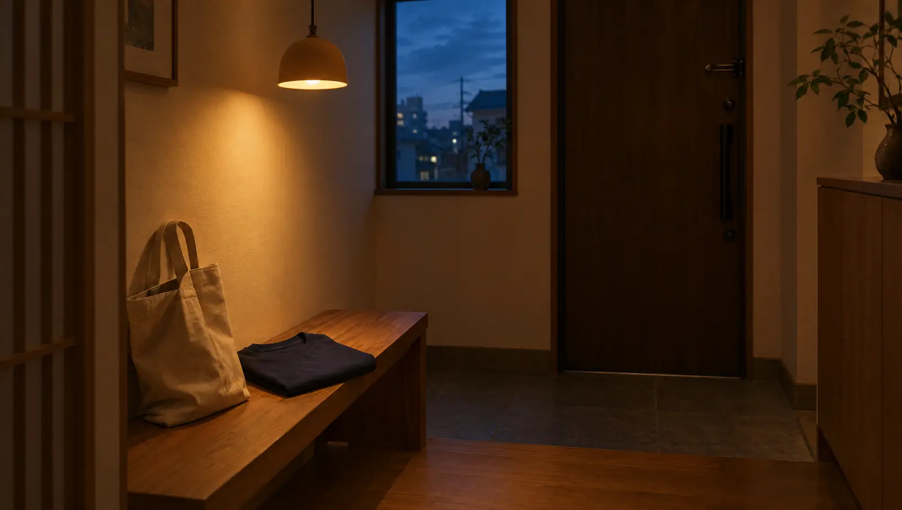
19:00
帰宅
外の服を脱いで、まずは一枚に着替えて。気持ちを切り替える合図に。
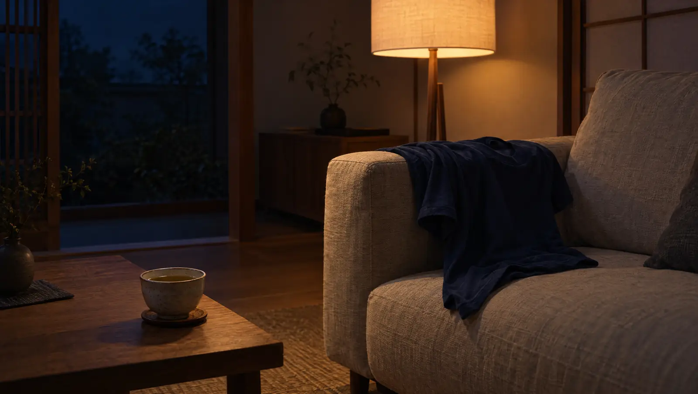
21:00
くつろぎ
お風呂あがりに、そのまま袖を通して。好きなお茶を片手に、ゆっくり過ごす時間に。
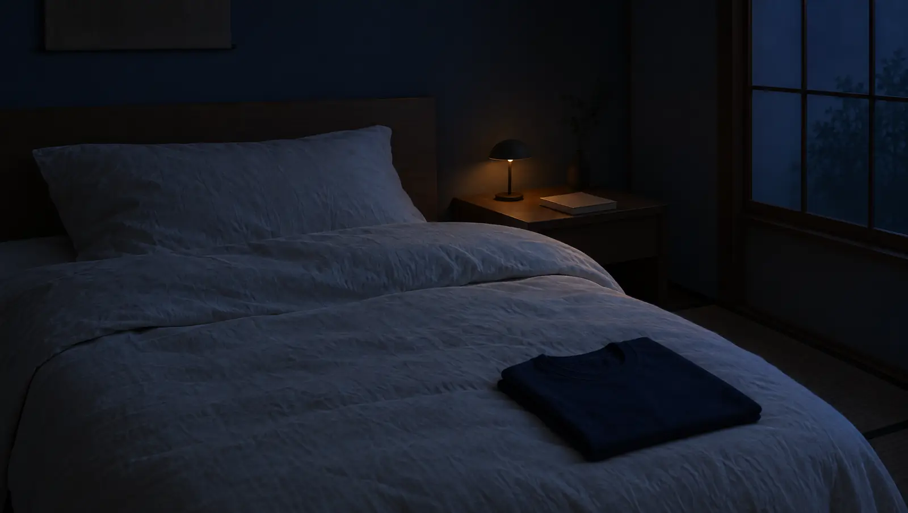
23:00
眠りの前
照明を落として、本を数ページ。やわらかな肌ざわりのまま、一日を終えます。
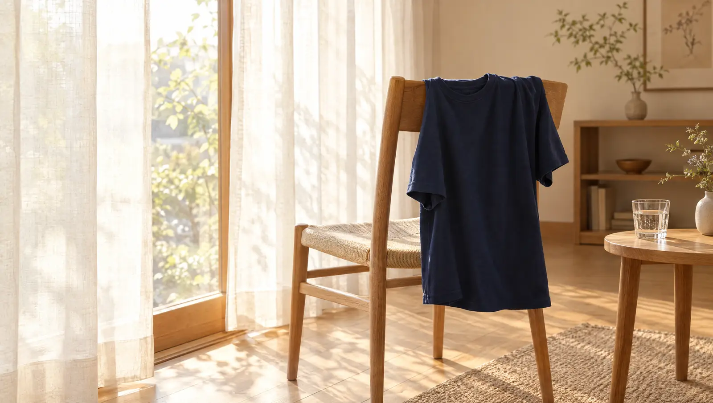
07:00
朝
明日の支度も、同じ一枚で。カーテンを開けて、新しい一日を。
06Numbers
数字で見る SAMPLE RELAX。
ものづくりの数字をご紹介します（架空の仕様です）。
- 生地の重さ
- 約160g/m²
- 仕上げの工程
- 12工程
- サイズ展開
- 4サイズ
- カラー
- 3カラー
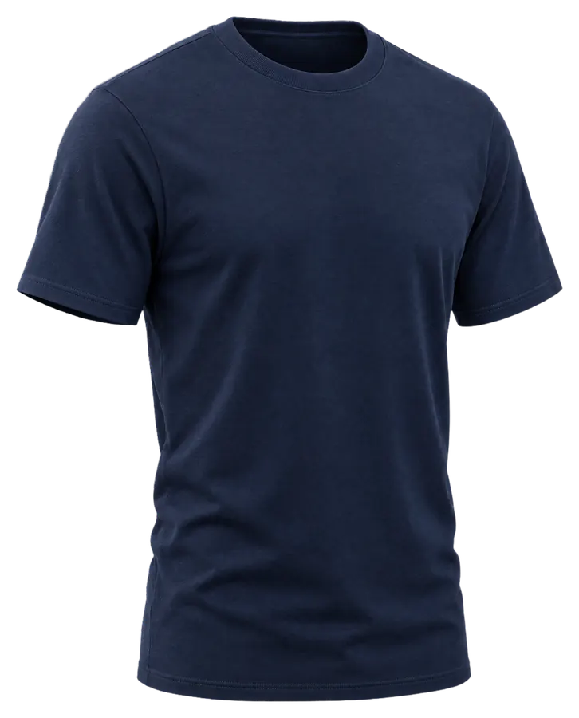
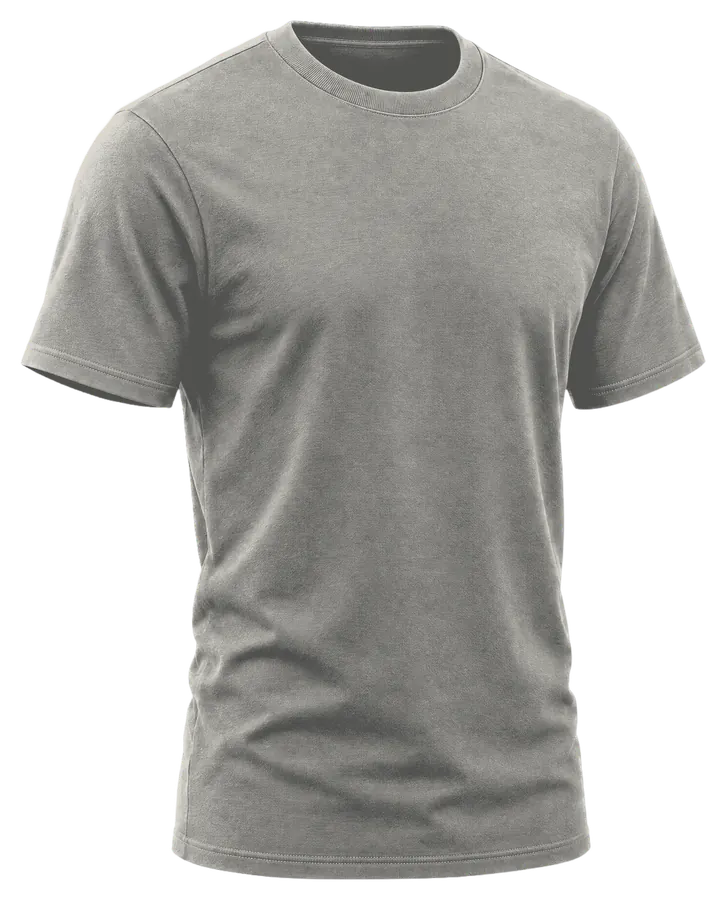
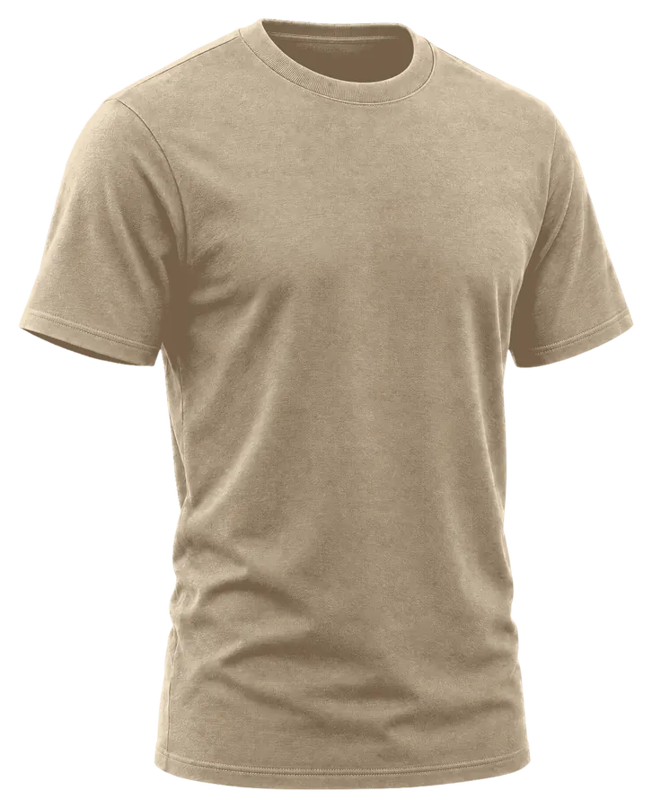
07Lineup
サイズとカラー。
四つのサイズと三つのカラーからお選びいただけます。
カラー：ネイビー
サイズ：M
| サイズ | 身丈 | 身幅 | 肩幅 | 袖丈 |
|---|---|---|---|---|
| S | 66 | 50 | 44 | 19 |
| M | 69 | 53 | 46 | 20 |
| L | 72 | 56 | 48 | 21 |
| XL | 75 | 59 | 50 | 22 |
本ページはデザインサンプルのため、ご購入いただけません。
08Voices
お使いの方の声。
生地がさらっとしていて、一日中着ていても気になりません。
30代・在宅勤務の日に
家に帰ってすぐ着替えるのが習慣になりました。肌ざわりがやさしいです。
40代・帰宅後に
夫への贈り物にしました。落ち着いた色で喜んでもらえました。
50代・ギフトとして
首まわりがきつくないので、休日はほとんどこれで過ごしています。
30代・週末に
お風呂あがりに着ると、くつろぐ時間が少し楽しみになりました。
40代・お風呂あがりに
洗濯機で洗えるので、気軽に使えるところが気に入っています。
20代・ひとり暮らし
ゆとりのある形で、ソファで本を読むときも窮屈に感じません。
50代・夜の読書時間に
色違いでそろえました。サイズ表がわかりやすかったです。
30代・パートナーと
掲載のご感想はサンプルです。実在の方の声ではありません。
09FAQ
よくあるご質問。
お手入れの方法を教えてください。
洗濯ネットに入れて、ご家庭の洗濯機で洗えます。タンブル乾燥はお控えいただき、形を整えて陰干ししてください。
サイズはどのように選べばよいですか。
ふだんお使いの T シャツと同じサイズをおすすめしています。ゆったり着たい方は、ワンサイズ上もご検討ください。サイズ表の身幅が目安になります。
素材は何ですか。
綿を中心とした細番手のニット生地です（架空の仕様です）。
ギフト包装はできますか。
ギフト包装をご用意する想定です。本ページはデザインサンプルのため、実際のご注文はできません。
返品や交換はできますか。
未使用の商品に限り、到着後 7 日以内に承る想定です（架空の条件です）。